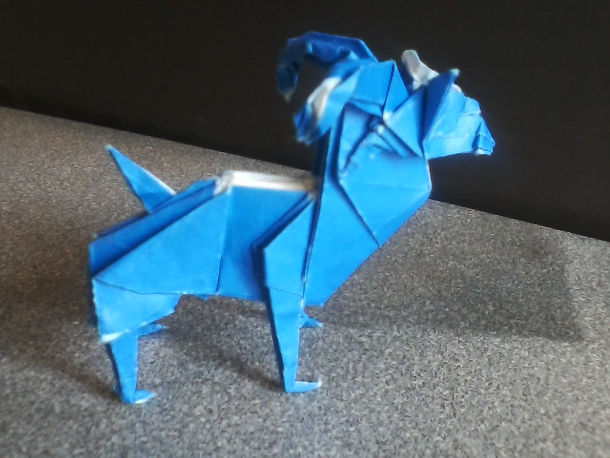
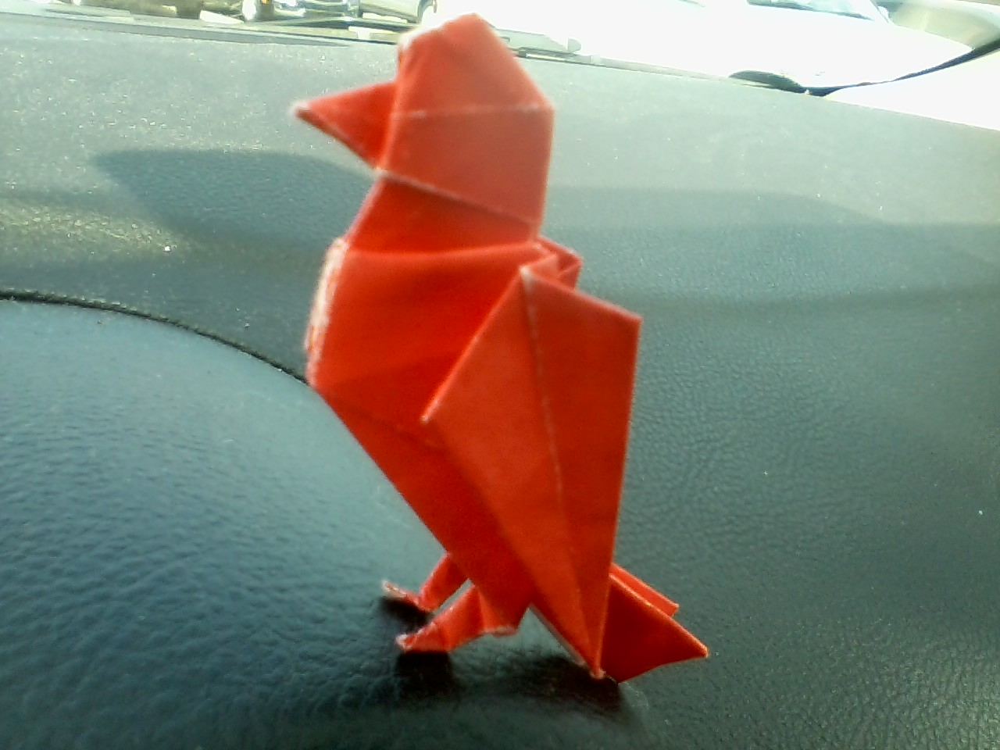
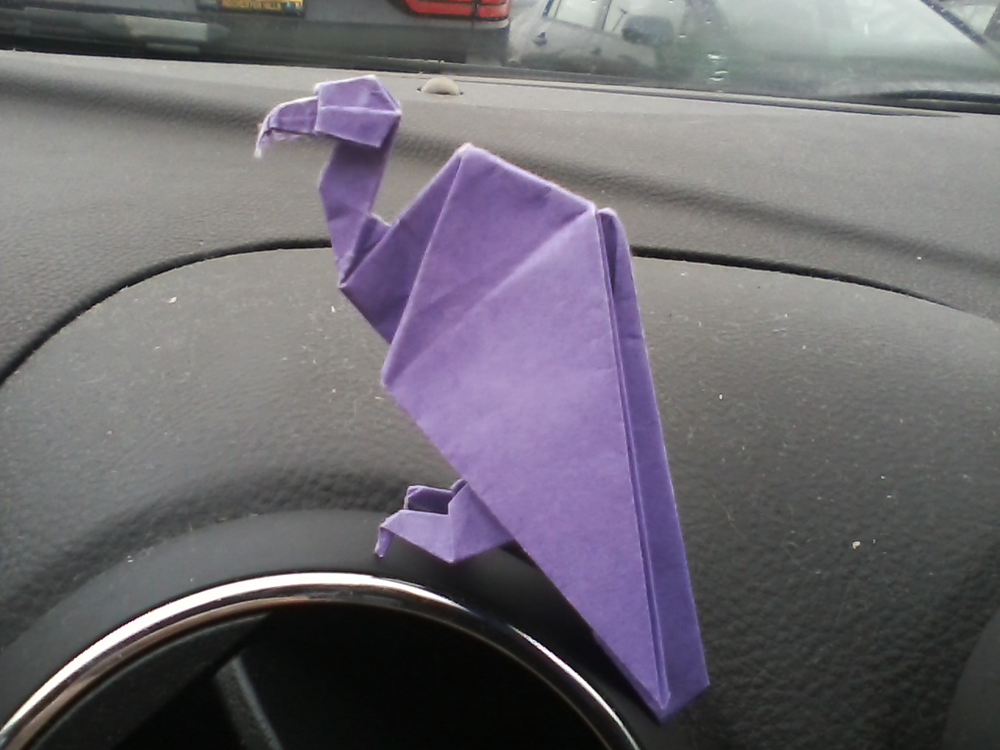
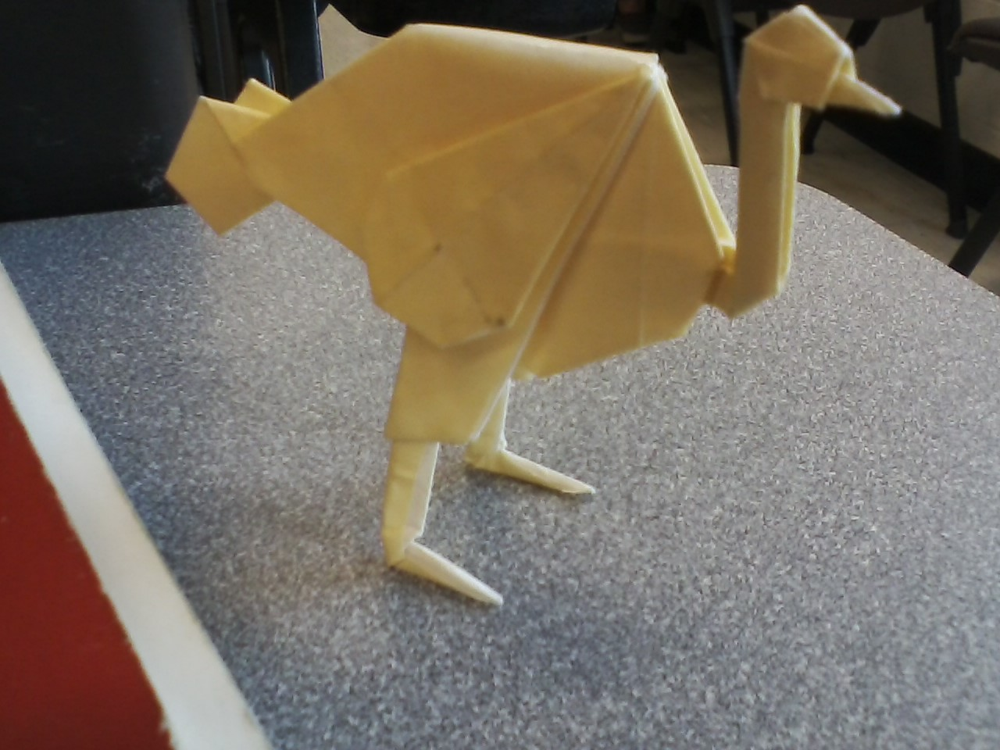
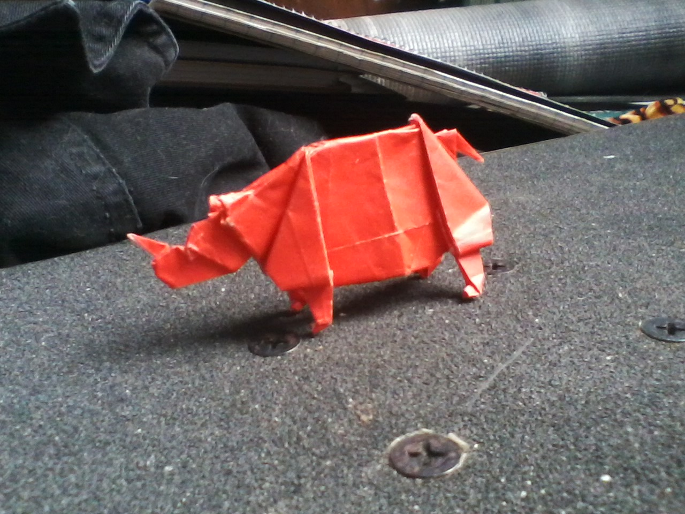

Blog
I enjoy cooking, folding origami, and listening to music.
    
Development
My development journey began during my time studying electronics at Macomb Community College. I started writing programs in BASIC with a microcontroller. I wrote simple programs to count, select random numbers, and control traffic signals. I also wrote a program to navigate a robot through a maze. From there I began learning of Assembly. After attaining a basic understanding of how programs function, I began learning C. After receiving my associates degree, I had decided that programming was what I wanted to do. I began learning C++ through Macomb. In my spare time, I learned a bit of Python. I started taking classes at OU learning Java. This included OOP and Data Structures. For my sophomore project my group built a password manager in Java with a focus on security and ease of access. We stored password password data in a SQLite database using AES encryption. It also implemented keystretching schemes. While the sophomore project was underway, four of the five of us were working on a network application for my networking final project. We created an application to find inputs to a hash function that corespond to specified output. A client would connect to a server and make a request. The server would then delegate that task to all connected clients. The clients would try random inputs to the hash function until a solution was discovered. The client that found the solution would send the solution to the server and the server would send a stop message to the clients that failed to find the solution.
Fraser
Fraser is a city in Macomb County in Michigan. The city was named for a lawyer from Detroit. It's a small city with a population of around 15,000 people. Its footprint is a mere four square miles. It has a few restaurants, some gas stations, and some supermarkets. The weather, barring winter, tends to be pleasant. There's plenty of critters including bats, foxes, and rabbits. Deer sightings aren't uncommon. One might hear screech owls at night.